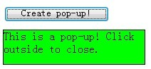
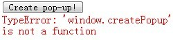
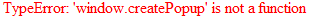

BT9028: 只有 IE 支持 window.createPopup 方法
作者：武利剑
标准参考
无
问题描述
只有 IE 支持 window.createPopup() 方法。
造成的影响
该问题将导致在其他浏览器中无法实现预期功能，脚本执行错误等问题。
受影响的浏览器
| IE6 IE7 IE8 |
|---|
问题分析
使用 window.createPopup() 方法，可以创建一个弹出式（pop-up）的窗口。这是一种典型的用于对话框、消息框和其他临时的窗口。
这个方法只有 IE 支持，举例如下：
<script type="text/javascript">
function show_popup() {
try {
var p = window.createPopup();
var pbody = p.document.body;
pbody.style.backgroundColor = "lime";
pbody.style.border = "solid black 1px";
pbody.innerHTML = "This is a pop-up! Click outside to close.";
p.show(10, 50, 200, 50, document.body);
} catch(err) {
document.getElementById("info").innerHTML = err;
}
}
</script>
<button onclick="show_popup()">Create pop-up!</button>
<div id="info" style="color:red;"></div>
如果 window.createPopup() 方法执行出错，错误信息会输出到 info 中。
如果执行成功，按钮下方会出现一个带有文字的绿色方块。
在各浏览器下的截图（点下 Create pop-up 按钮后的截图）：
| IE6 IE7 IE8 | Safari |
|---|---|
|  |  |
| Firefox | Chrome |
|  |  |
| Opera | |
|  | |
关于 createPopup 的更多信息，请参考 MSDN createPopup Method 和 popup Object 中的内容。
解决方案
尽量不要使用 IE 的特性，必须使用弹出窗口时，可以通过脚本使用兼容各浏览器的方式来实现。
参见
知识库
相关问题
测试环境
| 操作系统版本: | Windows 7 Ultimate build 7600 |
|---|---|
| 浏览器版本: |
IE6 IE7 IE8 Firefox 3.6 Chrome 4.0.302.3 dev Safari 4.0.4 Opera 10.51 |
| 测试页面: | createPopup.html |
| 本文更新时间: | 2010-07-02 |
关键字
window createPopup